Momentos Inesquecíveis
Primeiro Encontro/Beijo
Nosso "primeiro" encontro, a foto não é basicamente dela, mas eu considero os 2 como primeiros. Mas eu quero falar é daquele do nosso primeiro beijo, simplesmente mágico e engraçado, pois foi algo na emoção da hora, e ainda por cima após de um jogo de bilhar, sim, eu a levei para um "bar" no nosso primeiro encontro, tudo improvisado, mas foi algo que eu nunca vou esquecer. Queria reviver como espectador esse momento, olhar de longe e ver a gente se olhando, e eu com aquele sorriso bobo no rosto e vc me olhando de uma forma que me dava arrepios, foi aonde eu descobri o que era amor. E sim, foi vc que me puxou.

1 Viagem a sós
Um passeio lindo, mas tbm traumatizante. Primeira vez saindo sozinhos, um passeio apenas nosso e de mais ninguém, e parece que Deus estava com nós, pq pegarmos aquela cachoeira com somente a gente foi algo mágico, um passeio que não foi de última hora, mas foi algo de repente, não organizamos muita coisa pra levar, mas levamos o essencial, água, lanche, cadeiras, protetores e toalhas, mas o que mais levamos foi o amor, e isso foi o que mais importou. Mas uma coisa é certa, NUNCA mais podemos confiar 100% no Waze.
Fotos e mais Fotos
Olhares, caretas e sorrisos, tudo guardado em fotos e vídeos. É engraçado, pois nunca fui uma pessoa ligada a tirar foto, é uma coisa que eu odiava, minha galeria era algo vazio e de repente ficou lotada de coisas, fotos nossas, do Drako e da Lili, e eu te agradeço muito por ter me mostrado isso, eu amo viver o momento, mas tbm amo o fato de poder relembrar ele com as fotos, tudo isso graças a vc, que depois que te conheci, é a forma que eu mais gosto de lembrar da gente.
"Amor, confesso tu tira minha dor"
Essa aqui é história, essa foto, esse momento, essas lembranças, essa viagem, pra mim foi bizarro. Aquela noite na praia, fiz um dos pedidos mais fortes para o universo, que foi me deixar ao seu lado pro resto da vida. Que nem diz a música - "Quero conhecer todos os lugares desse mundo, mas sem você eu não vou"

Eu Te Amo
Não importa o ano, o mês, o dia, a hora, o segundo, o lugar, com quem, fazendo sla o que, sempre vou acabar pensando em vc e na gente. Sou completamente apaixonado por vc, e não tem como eu não pensar em vc, e em tudo que vivemos juntos e o que ainda vamos viver. Eu te amo, e espero que vc nunca duvide disso, pois é algo que eu sinto com todas as minhas forças, e que eu quero viver com vc por toda a minha vida.

 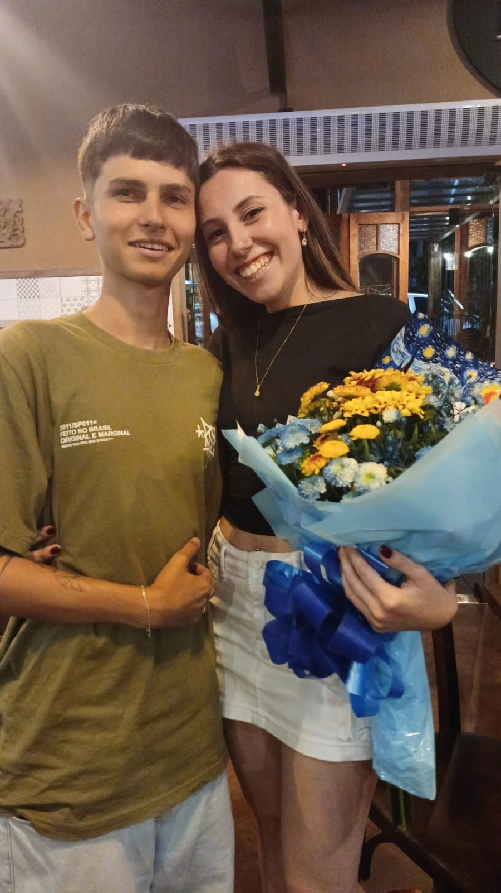
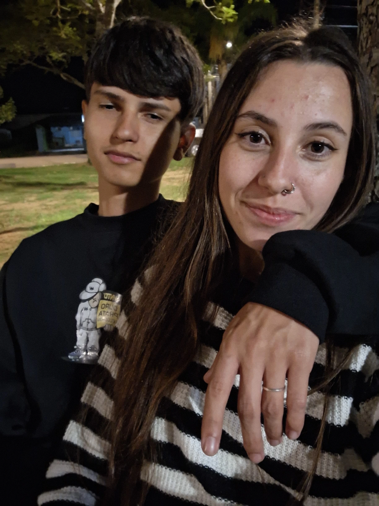
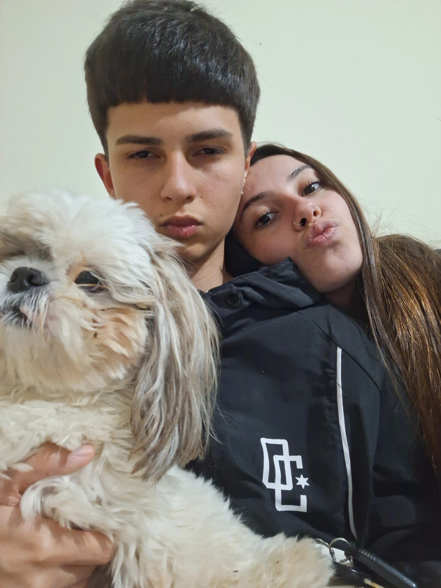
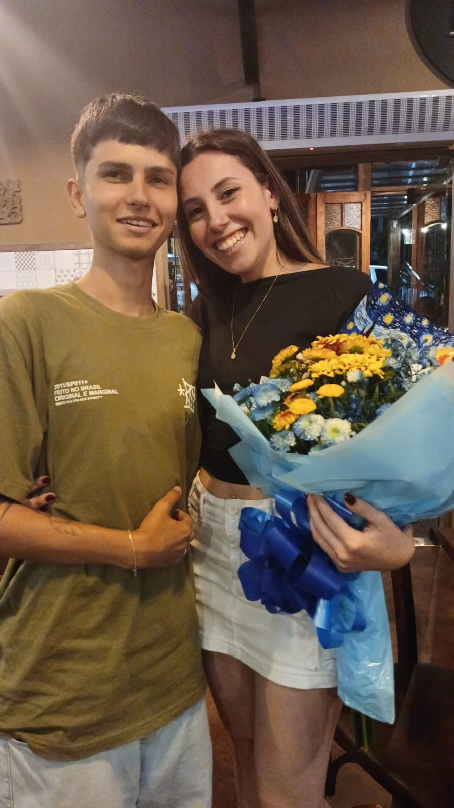
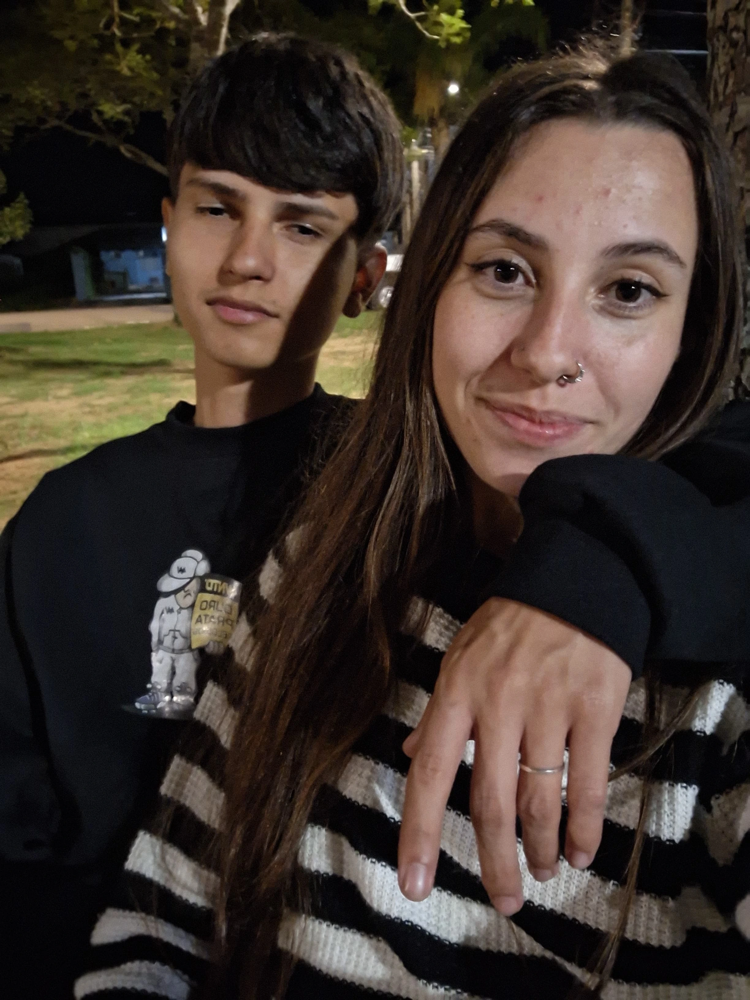
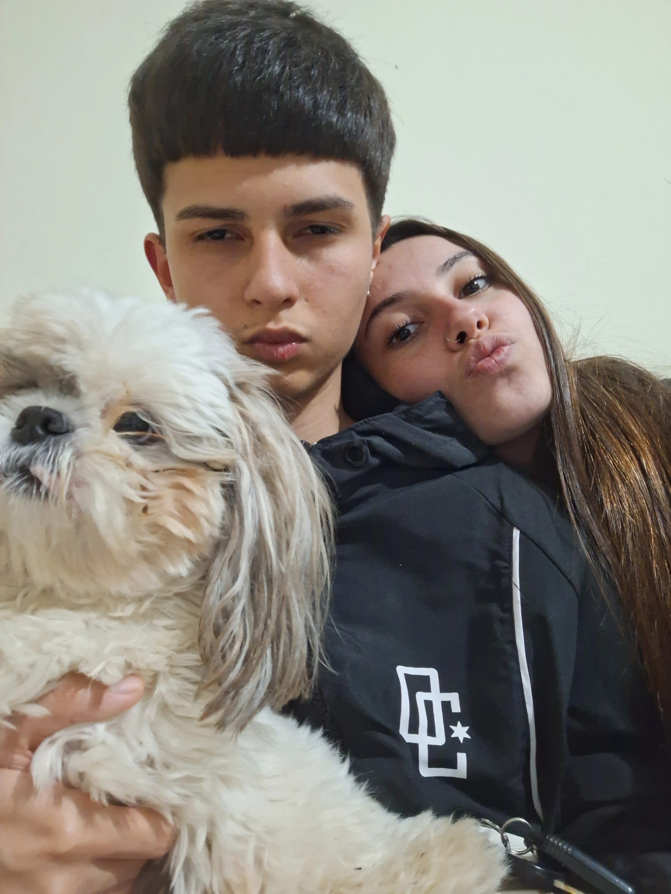
 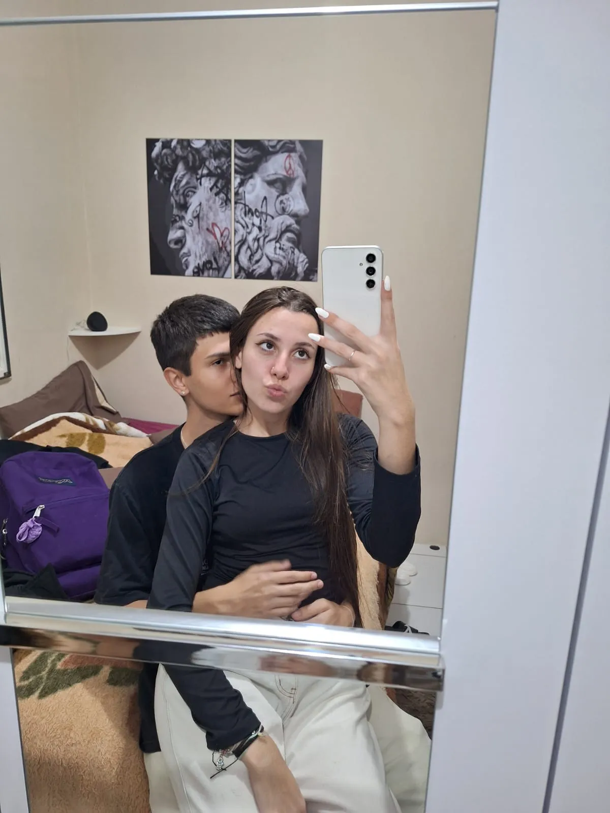
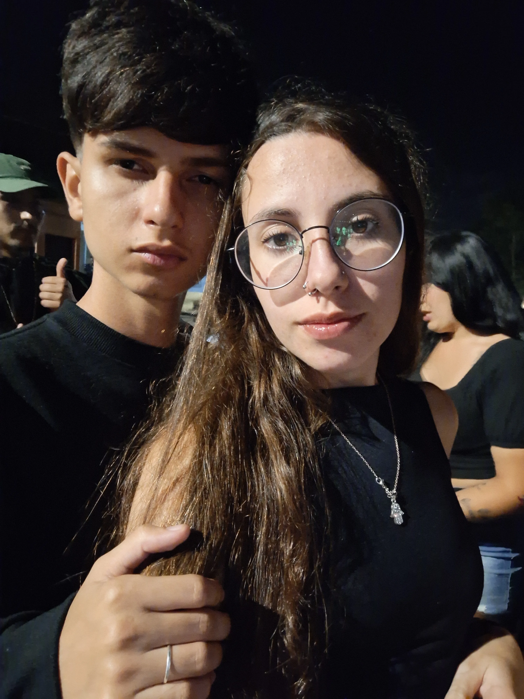
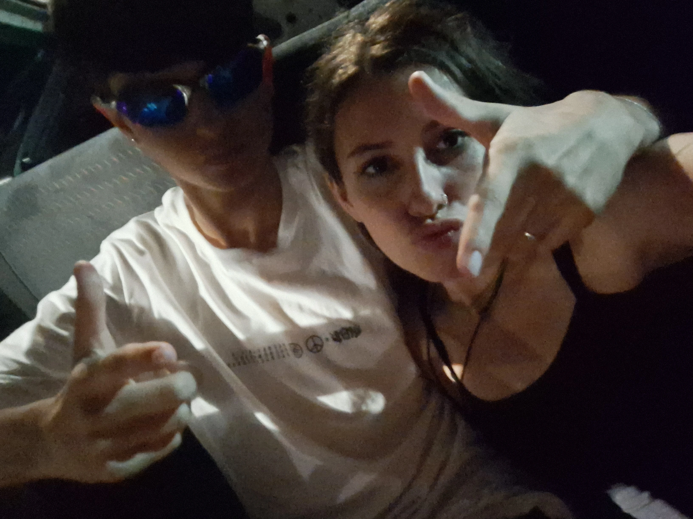
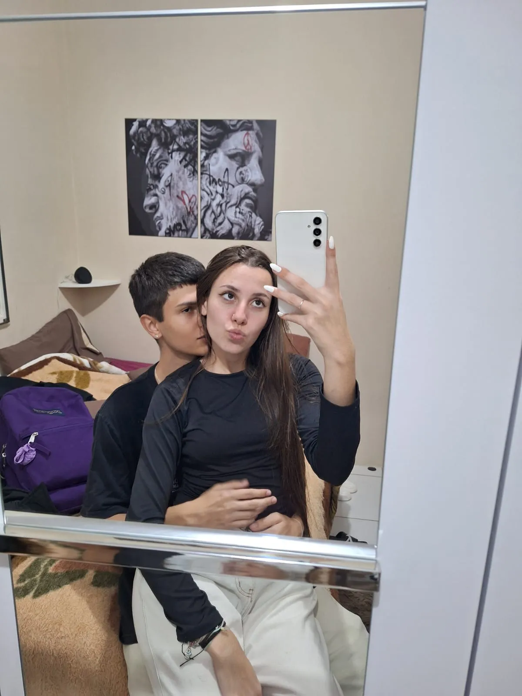
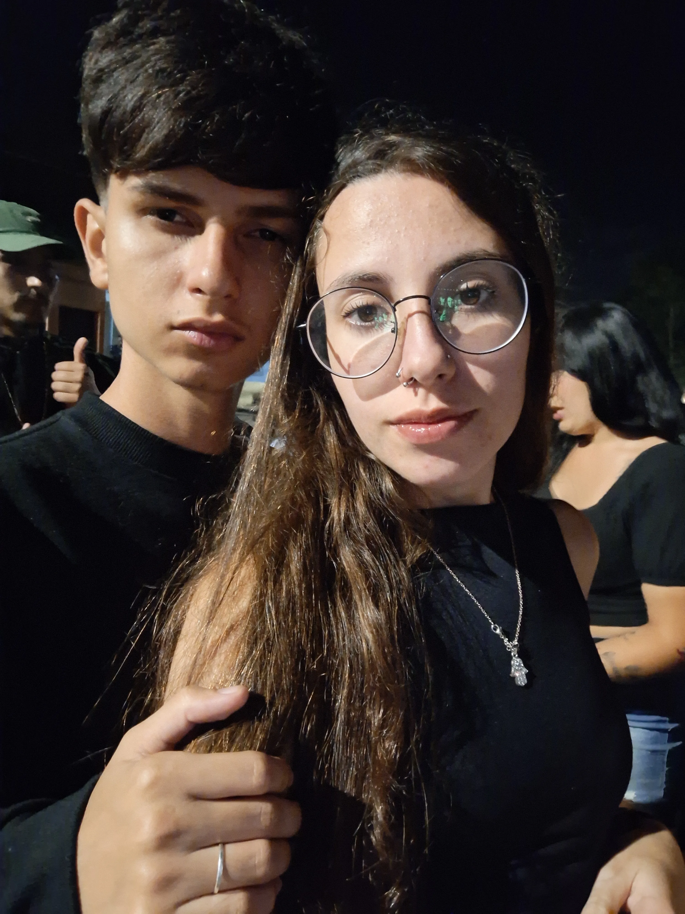
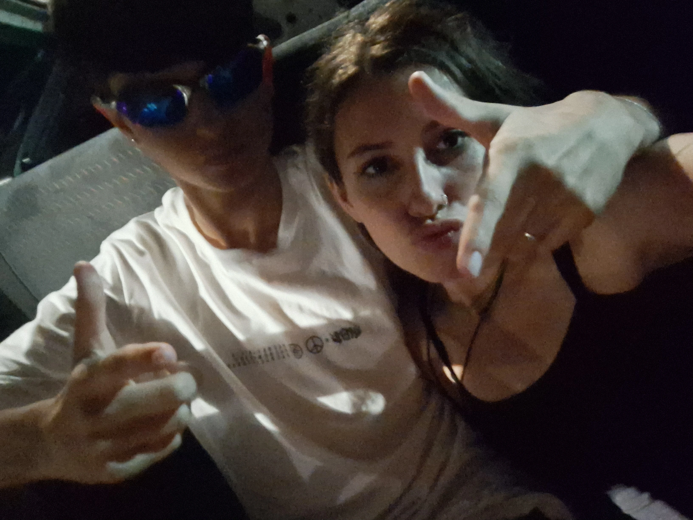